Tone and storytelling
We use illustrations to support users throughout the product, when they have a question, experience difficulties, arrive on a page without any data, etc. We try to provide our users with a comfortable space throughout their journey by creating strong feelings with our own illustrations.
Tone and storytelling
The illustrations allow us to bring our brand and product offering to life. Through these visuals we can share messages and positive feelings. By adding illustrations to our product and marketing content we directly address the user.
Positive energy
Through illustrations, we spread a positive energy throughout our product, even in frustrated or disappointing situations. We are a tool which aim is to help people in their daily work, we will find a solution together.
Serious but human
Our product is used all day long by people. Illustrations help us build strong relationships with our users. They help us add a human touch right in the middle of the product.
Magical quality
Illustrations shouldn’t be a decoration, they must have a concrete purpose, consolidate an action users have to perform, clarify a context or bring information to our users. Each situation has a proper context or story, storytelling allows us to give this little pinch of magic to our product and enhance the user experience.